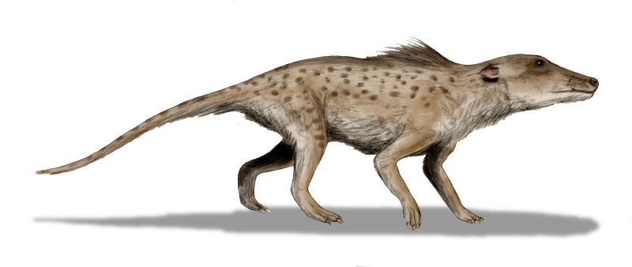

Pakicetus
What
A wolf-sized, four-legged, hoofed mammal, wading through the warm coastal shallows of the Tethys Sea.
How
It already carried a distinctive set of inner-ear bones — the same anatomical signature every whale alive today still carries.
Why
The whale story begins on land, in the shallows of this very region. Its closest living land relative today, oddly enough, is the hippo.